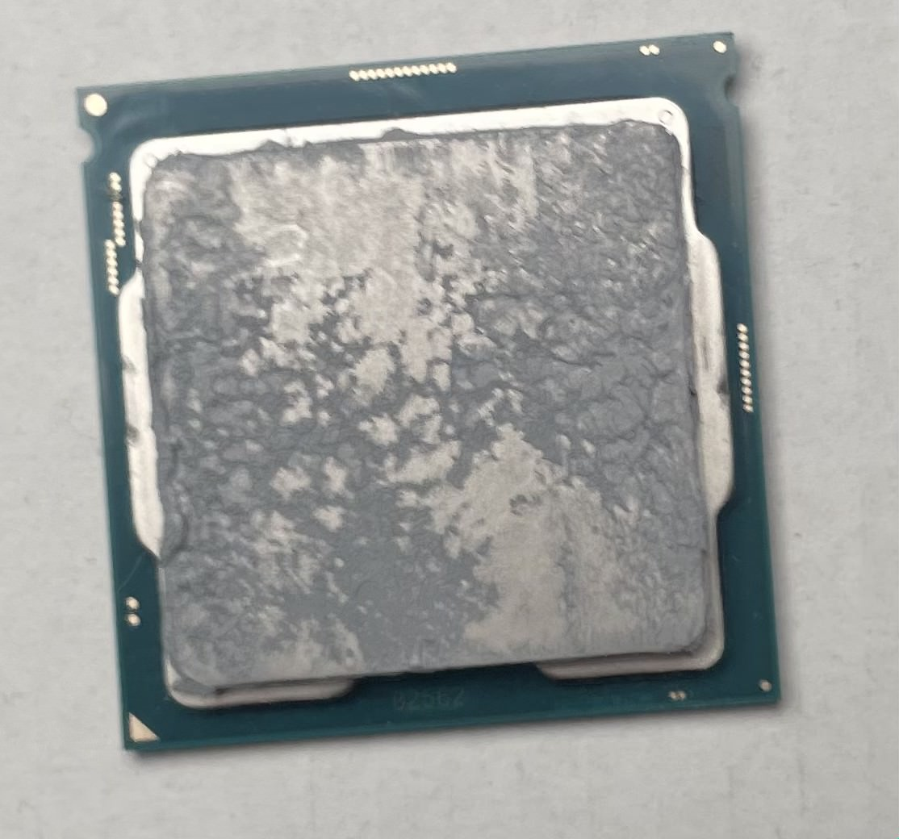

Step 1: Install CPU
Materials Needed
- CPU
- Motherboard
Instructions
- Locate the CPU Socket on the Motherboard
- Identify the Gold Triangle on the CPU
- Open the CPU Socket Latch
- Place the CPU into the Socket
- Secure the CPU
Look for the large square socket on the motherboard, typically labeled "Socket."
Take a look at your CPU and locate the small gold triangle in one corner. This triangle aligns with a corresponding triangle on the motherboard socket to guide placement.
Lift the metal latch next to the CPU socket on the motherboard. This will unlock the socket cover.
Carefully align the gold triangle on the CPU with the triangle on the socket. Gently place the CPU into the socket. It should fit without any force.

Once the CPU is in place, lower the socket cover and push the latch back down to secure it.
Video Guide
I recorded a video showing the installation process: CPU Installation Video
Important Tips
- Handle with Care: Always hold the CPU by the edges, avoiding the gold pins underneath.
- Don’t Force It: The CPU should fit snugly into the socket without any pressure.